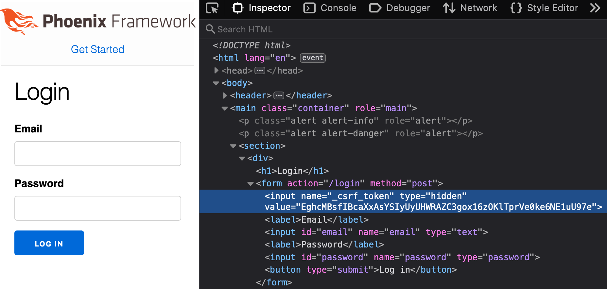
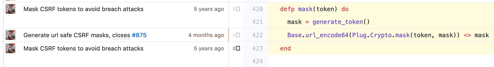
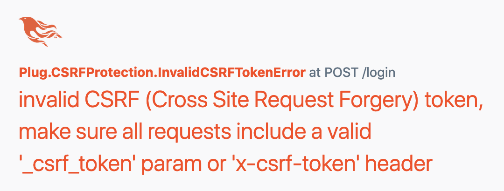

Cross-site request foregery is one of many techniqu es an attacker might use to pwn a web application. In this article we take a close look at how exactly CSRF tokens work from the conte xt of the Phoenix Web Framework.
2020-02-19
I set out to understand how CSRF tokens are generated and validated. I did it by tracing the flow of function calls through a Phoenix web applciation. It was a process that led me down some deep rabbit holes, but ultimately was a rewarding experience. Readers who are less interested in the nitty gritty details of this article can skip to the summary section toward the bottom for a TL;DR.
This article details the life of a CSRF token. To begin the journey we will navigate to a page with an HTML form in the body - “/login”, for example. We’ll inspect the fields within the form to see that there’s a hidden _csrf_token field. It was put in the form automatically.

We can take a look at the source code for Phoenix.HTML.form_tag/3 to see where the magic happens. This is the part of the code that adds a hidden input field to store the token. It is added to the form when the method is “POST”.
Following the code further, we see that Plug.CSRFProtection.get_csrf_token_for/1 is used to generate the token. Here’s an example of what that function call looks like from an IEx interactive console.
iex(1)> Plug.CSRFProtection.get_csrf_token_for("/login")
"IwAcHGAnampLJz0VOBo5WhIpKRU1BwU5AvQyMK_ZsfkVgLN-WfAxO4lP"Right now this just looks like a bunch of random characters (spoiler alert: it sort of is just a bunch of random characters). Let’s trace the code a little more to understand how it works, and why it looks like that.
It turns out that get_csrf_token_for/1 does some branching and winds up calling Plug.CSRFProtection.get_csrf_token/0. According to the docstring, its job is to generate a token and store it in the process dictionary (if the token does not already exist). A token is generated like this:
token = mask(unmasked_csrf_token())
We will ignore the mask function for a moment, and skip passed a few intermediary function calls to look at Plug.CSRFProtection.generate_token/0, which is where we finally get down to brass tacks.
defp generate_token do
Base.url_encode64(:crypto.strong_rand_bytes(@token_size))
end
There’s a call to the Erlang function :crypto.strong_rand_bytes/1, which will generate N random bytes. We’re not going to go any deeper to find out how this function actually works. Random numbers could probably be another article in and of itself.
The random bytes are then Base64 encoded. I already wrote an article about how Base64 works, so we won’t dive into that either. Suffice to say, it makes sense to encode the random bytes into a format that can safely be transmitted using HTTP.
We have now learned how the token is created: it’s a Base64-encoded random string of characters. However, the fun does not stop there, because this is just an “unmasked” token. The unmasked token was passed to another function, Plug.CSRFProtection.mask/1.
# Plug.CSRFProtection
defp mask(token) do
mask = generate_token()
Base.encode64(Plug.Crypto.mask(token, mask)) <> mask
end
Wow, now this is getting interesting. We’re going to have to dive deeper into the Plug.Crypto module to understand what’s going on here. Let’s figure out:
To answer the first question, we will dive into the Plug.Crypto module and look at mask/2. We’ll return to Plug.CSRFProtection.mask/1 in a moment.
@doc """
Masks the token on the left with the token on the right.
Both tokens are required to have the same size.
"""
@spec mask(binary(), binary()) :: binary()
def mask(left, right) do
mask(left, right, "")
end
defp mask(<<x, left::binary>>, <<y, right::binary>>, acc) do
mask(left, right, <<acc::binary, x ^^^ y>>)
end
defp mask(<<>>, <<>>, acc) do
acc
end
Don’t let the recursion, binary pattern matching, and ^^^ macro scare you! ^^^ is the XOR operator from the Bitwise module. The mask/2 function is recursively XORing each character from the token and the mask. There aren’t many business logic situations that call for XOR, so this is not something we get to use on a daily basis.
Note: mask/2 recently changed to just be :crypto.exor(left, right)
Say we wanted to XOR “C” and “d” by hand. First, we find the ASCII values of the characters, so 67 and 100. Then we convert the ASCII values to binary, so 1000011 and 1100100. Next, we line up the binary values so that it’s easy to compare each bit.
The rules for XOR is that there must be one or the other but not both in order to produce a 1. For example:
1000011 <-- "C"
1100100 <-- "d"
-------
0100111 <-- "'" (XOR Result!)
Finally, we convert the result, 0100111, back to a Base-10 number and then find the corresponding ASCII character. “‘“ is the result of “C” XOR “d”. With this knowledge, we can better understand what Plug.Crypto.mask/2 is doing.
Now we will return back to Plug.CSRFPrevention‘s version of mask/1.
# Plug.CSRFProtection
defp mask(token) do
mask = generate_token()
Base.encode64(Plug.Crypto.mask(token, mask)) <> mask
end
The function takes a token, then generates a mask. It’s a bit confusing because the mask function itself also has a variable named mask. Notice that mask (the variable) is generated in the same way as the token was, so it can really just be thought of as a second token. The token and the mask variable are XORed together, and then Base64-encoded. Finally, the mask variable is also appended onto it all.
We see that we end up with a long value like this:
EghcMBsfIBcaXxAsYSIyUyUHWRAZC3gox16zOKlTprVe0ke6NE1uU97eWe now know what the mask is, but the question of why is all this necessary? still stands.
Let’s see if there’s any evidence about why this function exists, so We’ll open up a git blame view on GitHub.

Ah-ha! “Mask CSRF tokens to avoid breach attacks” - this is a useful commit message! With a bit of research about what a breach attack is, we can learn that it’s basically when an attacker is able to send a bunch of requests, and incrementally figure out parts of the response body, even when the responses are encrypted.
The attacker takes advantage of the fact that the responses use compression, and that the size of the compressed responses either grows or shrinks, depending on if one small guess of a character is correct or incorrect. In “SSL, gone in 30 seconds”, the security researchers who discovered this vulnerability explain and demonstrate this attack in great detail.
They have also released a paper which suggests attack mitigation options. This excerpt explains Plug.CSRFProtection.mask/1‘s algorithm.
The attack relies on the fact that the targeted secret remains the same between requests. While it is usually impractical to rotate secrets on each request, there is a method due to Tom Berson which can synthesize this effect. Instead of embedding a secret S in a page, on each request, generate a new onetime pad P, and embed
P || (P ⊕ S)in the page. Here, we use||to denote concatenation, and⊕to denote XOR.
Masking the token helps prevent an attacker from incrementally guessing characters of a response body. That’s because even though the token may not change between requests, the mask will. Therefore, the token is represented differently every time in the response body. When we start looking at token validation, we will see that the XOR mask can be reversed to reveal the original token.
We now know why the token is masked, as well as what it means to mask it. We also know how an unmasked token is created. However, it’s not enough to just insert a token into the HTML document. The same token is also placed in the user’s browser cookies.
If we have a look at the cookies in our browser, we’ll see something, but it obviously doesn’t match the token we looked at from the HTML form. That’s because Phoenix cryptographically signs cookies so that they cannot be tampered with.
Every Phoenix app has a secret_key_base value defined in config/config.ex, and this is what Phoenix uses as a signature. However, secret_key_base is supposed to be a secret value that nobody knows, so it’s not an option to use secret_key_base directly. Instead, Phoenix relies on the Plug.Crypto.KeyGenerator module. Here is an excerpt from the docs that summarizes the purpose of the Plug.Crypto.KeyGenerator module:
…This lets applications have a single secure secret, but avoid reusing that key in multiple incompatible contexts.
We will now take a look at how the application is able to protect the integrity and authenticity of the session cookie data, which includes the CSRF token.
How would it be possible to use the application’s secret key in potentially insecure places? Plug.Crypto.KeyGenerator accomplishes this by implementing an algorithm called Password-Based Key Derivation Function 2, or PBKDF2.
It takes a salt and a secret as its inputs. Then it repeatedly applies a pseudo random function (PRF) to create a derived key. An important detail of PBKDF2 is that it allows the program to specify how many times the PRF will be applied. In other words, it allows the program to decide how long the algorithm should take. This helps make brute force attacks less feasible. The iteration count defaults to 1,000 - the recommended minimum.
The PRF used here is HMAC-sha256. Coincidentally, HMAC is also used to sign and verify the session data as a whole, which we will go over in the next section.
By logging the result of Plug.Crypto.KeyGenerator.generate/6 we can see that it a session signing key is only generated once. All subsequent requests use a cached value, which is stored in ETS. Here’s an example of what it looks like (the bitstring is the result, A.K.A. the derived session signing key):
iex(2)> :ets.lookup(Plug.Keys, {"2/JWt8kJK5ybWYFPqXGDZj0o3LuKerv1CnG/F8LVbLi71hZTYllzKxP9HMpT+y0m", "8yQvCfAG",
...(2)> 1000, 32, :sha256})
[
{{"2/JWt8kJK5ybWYFPqXGDZj0o3LuKerv1CnG/F8LVbLi71hZTYllzKxP9HMpT+y0m",
"8yQvCfAG", 1000, 32, :sha256},
<<125, 248, 227, 17, 106, 91, 67, 35, 35, 99, 173, 58, 14, 29, 96, 107, 220,
193, 148, 164, 44, 239, 17, 58, 110, 9, 116, 230, 91, 9, 188, 88>>}
]
Now that we can see how a session signing key is generated from the application’s secret_key_base, we can learn how it is used to actually sign things.
As was mentioned above, HMAC is not only used to generate a signing key, but also used in the process of signing the session cookie data. As we will see, the goal of signing the data is not to prevent it from being seen, but rather to verify the authenticity and integrity of the data.
HMAC takes three inputs:
The output of HMAC is a string of bytes that reflects the message and key which was provided as input to the function. The message is sent along side the HMAC. The idea is that the message cannot be changed because the HMAC would no longer match. The HMAC cannot be changed either, because the secret key is not known (dependent on the strength of the underlying hash function).
A question we might consider is, Why not just use a SHA hash function directly, or some other kind of “checksum” approach? The answer is that HMAC is superior to sha-1, and sha-256 because it protects against length extension attacks. Computerphile has a great video about HMAC.
In this example, the message is an Elixir map with the CSRF token. The key is the derived session signing key that we talked about above, and the underlying hash function is sha256.
The function hmac_sha2_sign/3 is called by Plug.Crypto.MessageVerifier.sign/3, and we can look at it to understand why the session cookie looks the way it does.
# `payload` and `key` are binaries, digest_type is :sha256
defp hmac_sha2_sign(payload, key, digest_type) do
protected = hmac_sha2_to_protected(digest_type)
plain_text = signing_input(protected, payload)
signature = :crypto.hmac(digest_type, key, plain_text)
encode_token(plain_text, signature)
endThe result of this function will be what we can see in the browser as the value of the cookie:
SFMyNTY.g3QAAAABbQAAAAtfY3NyZl90b2tlbm0AAAAYTEJGLWZrMnNFODFxU1hXVzh2eTEzTXpC._ujkmRgmetIDittd4rvJuNoEvHrIVG0d1-dmW7pQ7mw
Notice that this string of text can be split into three sections between the "."‘s. The first section is the result of hmac_sha2_to_protected(digest_type). It’s just a Base64-encoded rendition of the string, “HS256”.
The second section is also encoded with Base64. It represents the message that is being signed and comes from signing_input(protected, payload). We can have a look at it by decoding and then translating the binary to a term:
"g3QAAAABbQAAAAtfY3NyZl90b2tlbm0AAAAYTEJGLWZrMnNFODFxU1hXVzh2eTEzTXpC"
|> Base.decode64!()
|> :erlang.binary_to_term()
# Result: %{"_csrf_token" => "LBF-fk2sE81qSXWW8vy13MzB"}
The last section is the signature, which comes from :crypto.hmac(digest_type, key, plain_text). As we can see from the function arguments, it takes a hash function (digest_type), a key, and then the message to secure. The signature is also Base64-encoded and joined together with the message.
Now that we can see the token is securely stored in the cookie, along with the details behind how that gets created, the last thing to look at is how the data is verified.
We have seen that a token is placed in the HTML document, as well as in a cookie. The last thing to cover is how they are verified. In the code below, from the Plug.CSRFProtection module, we can start to follow the code to see how token verification happens.
defp verified_request?(conn, csrf_token, allow_hosts) do
conn.method in @unprotected_methods ||
valid_csrf_token?(conn, csrf_token, conn.body_params["_csrf_token"], allow_hosts) ||
valid_csrf_token?(conn, csrf_token, first_x_csrf_token(conn), allow_hosts) ||
skip_csrf_protection?(conn)
end
csrf_token comes from the session, and it’s the unmasked version of the token:
# example:
"zkvLryGmwmy_g3eJQ0kuyRIg"
conn.body_params["_csrf_token"] is the masked token from the HTML body:
# example:
"SS0lL0YUAitPNB0bBH8cEAF/NBsICiwQ3FSc4mEF8YdDcLyZPO_nqXew"
Both of these are sent to valid_csrf_token?/4 and then to valid_masked_token?/3. The mask is pattern matched out of the tail end of the token from the HTML body. Plug.Crypto.masked_compare/3 is then able to compare that the tokens match.
@doc """
Compares the two binaries (one being masked) in constant-time to avoid
timing attacks.
It is assumed the right token is masked according to the given mask.
"""
@spec masked_compare(binary(), binary(), binary()) :: boolean()
def masked_compare(left, right, mask)
when is_binary(left) and is_binary(right) and is_binary(mask) do
byte_size(left) == byte_size(right) and masked_compare(left, right, mask, 0)
end
defp masked_compare(<<x, left::binary>>, <<y, right::binary>>, <<z, mask::binary>>, acc) do
xorred = x ^^^ (y ^^^ z)
masked_compare(left, right, mask, acc ||| xorred)
end
defp masked_compare(<<>>, <<>>, <<>>, acc) do
acc === 0
endIf the tokens don’t match, then the user is met with an error message.

To wrap things up let’s do a quick recap of the whole process of when a user visits a page that has a form with HTTP method “POST”. The order of events isn’t meant to be completely accurate - my goal here is to paint a generalized picture of what happens overall.
Phoenix seems to use the “Double Submit Cookie” approach when it comes to protecting from CSRF.
GET request issued to “/login” route. Phoenix.HTML.form_tag detects that the login form should include a CSRF token, since the form method is POST. Plug.CSRFProtection.get_csrf_token_for("/login") is called, and it generates a masked CSRF token. The mask is the result of XORing the token and “random bytes” together. secret_key_base in order to cryptographically sign the data stored in the cookie. This is to prevent the data from being changed by someone other than the application itself. This is done with PBKDF2. set-cookie response header to set a cookie on the users browser with the same (unmasked) token. At this point the user can fill out the form and submit. This will trigger an HTTP POST request, and the tokens will be verified.
That’s about it! As we have seen, there’s a lot of fancy stuff going on as part of this process, and its pretty amazing to try and understand how it all fits together.
It’s this kind of stuff that makes me really appreciate all of the work that people are doing to both make and break software. I think it’s a good practice to take a close look at the technologies, libraries, and frameworks that we use once in a while. It’s a blessing that we don’t have to totally understand all the details in order to create and be productive, but there is definitely value in doing so from time to time.